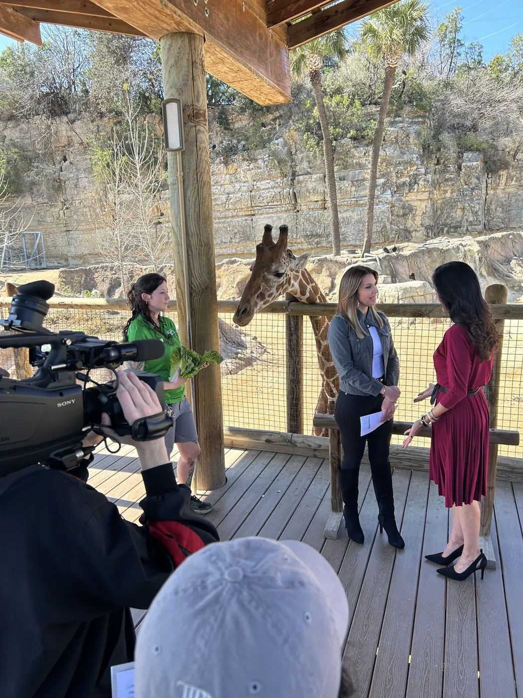
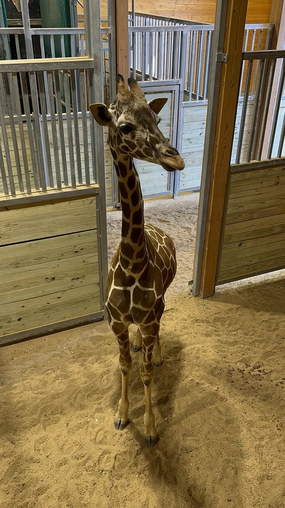
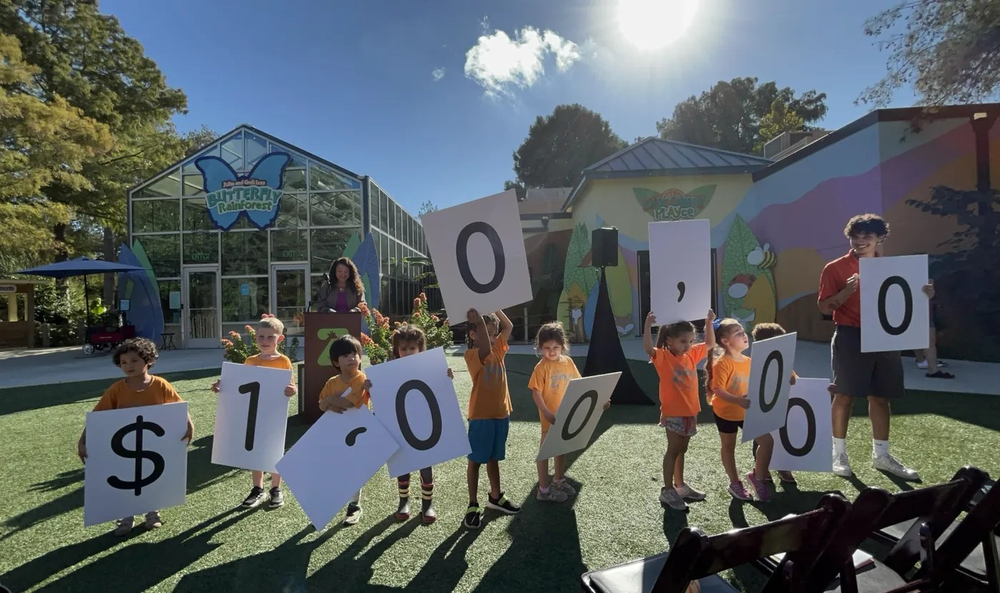
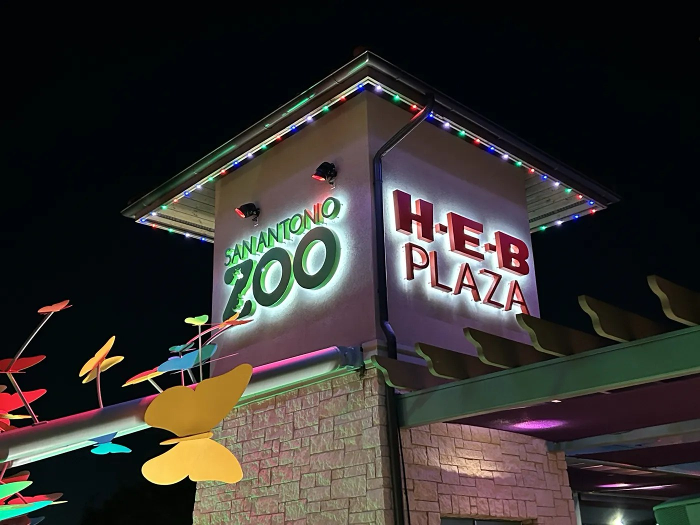
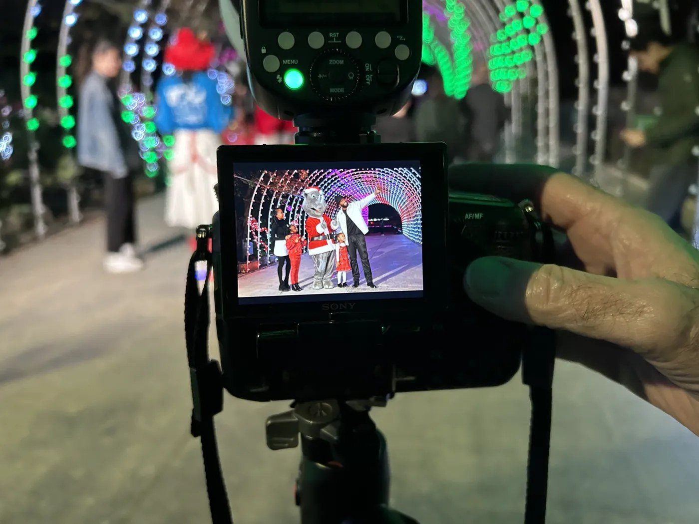
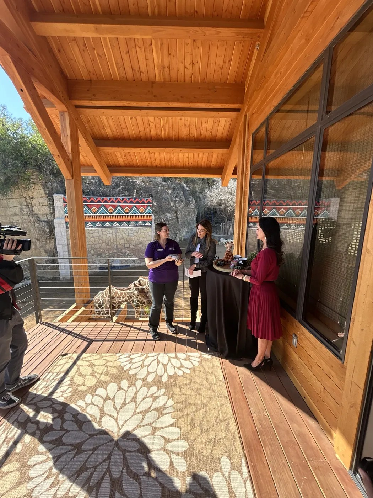
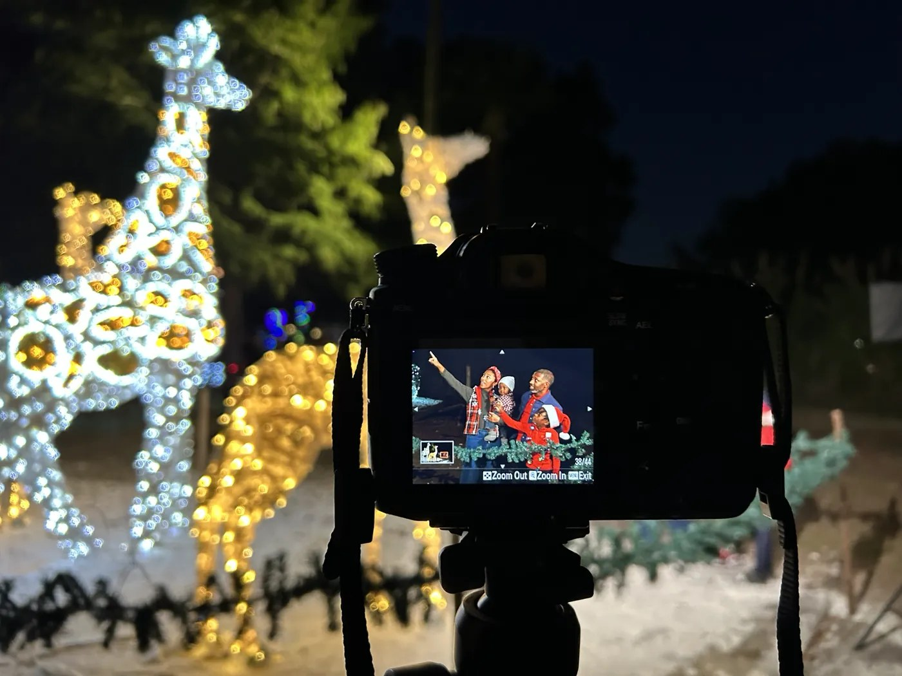

Rebuilt the calendar
Within my first 60 days, I revamped the social content calendar and built repeatable content buckets that filled roughly 60% of the week, leaving room for trends, day-of moments, and timely opportunities.
San Antonio Zoo · April 2024 – April 2025
As Integrated Marketing Manager, Public Relations and Social Media, I helped turn a reactive posting rhythm into a more strategic content system that supported awareness, attendance, memberships, PR coverage, and revenue.
Collaboration + ownership: I led the content calendar and social/PR work within a cross-functional marketing team, partnering with animal care, events, leadership, and outside media. The results below reflect that shared effort.
The zoo had scale, strong audience interest, and no shortage of great stories. The problem was operational: the social workflow had become too reactive. Planning often began at the start of the week with a version of, “what are we going to post?”
That made it harder to diversify storytelling, build momentum around campaigns, and plan far enough ahead to be genuinely strategic. The opportunity was to create a better system without losing the spontaneity that makes social actually work.

15%
Increase in comments and shares through a more audience-focused social strategy.
2 months
Ahead on content planning after establishing repeatable, sustainable content buckets.
National Lift
Major media pickup driven by stronger, more culturally relevant content pairings.
This role was bigger than social publishing. I helped improve the system behind the storytelling—planning, collaboration, access, timing, and media support—so content could contribute to revenue, attendance, and PR with a lot more intention.
Within my first 60 days, I revamped the social content calendar and built repeatable content buckets that filled roughly 60% of the week, leaving room for trends, day-of moments, and timely opportunities.
I helped build stronger trust and cooperation across animal care teams and internal departments so marketing had better access to animals, people, and real story opportunities. Better trust created a better content pipeline.
I pushed for a more balanced mix of animal storytelling, education, seasonal campaigns, event promotion, humor, real-time trend participation, and platform-aware community engagement so the brand felt more varied, more responsive, and more culturally aware.


We treated community management like part of the content, not the cleanup after it. Comments were monitored consistently, with extra focus on the first 48 hours after a post went live, when audience attention and conversation were highest.
Replies were shaped intentionally based on platform expectations — more polished on LinkedIn, more playful on Instagram, and more fast, humorous, and internet-native on TikTok when the moment called for it. The goal was to make the brand feel responsive without sounding like the same voice was pasted onto every platform.
That same approach extended to UGC. When guests, creators, or fans tagged the zoo, we made a point to like and respond in a way that matched the platform and the post itself. The goal was to make the brand feel present, appreciative, and genuinely part of the conversation rather than only showing up on its own posts.
Beyond day-to-day engagement, I was also building toward a more formal UGC and creator strategy. The plan was to turn strong community participation into a repeatable content bucket supported by a clearer creator program with perks like free zoo tickets, event access, meals, swag, and other incentives that could help build stronger long-term relationships and a more consistent stream of community-driven content.
48-hour priority window: newer posts got the fastest attention so the brand stayed active while interest was highest.
UGC engagement loop: likes and comments on tagged posts helped guests feel seen beyond the zoo’s own feed.
Surprise-and-delight: when a fan from Rhode Island shared that she was traveling specifically to visit the zoo, we followed up with nearby hotel recommendations, asked when she was coming, and arranged complimentary tickets for her and the friends traveling with her.
Milestone moments: the zoo’s one millionth visitor was turned into a bigger celebration with confetti cannons, a gift basket, animal interactions, and meal vouchers for the day.
Goal: build excitement for the zoo’s new giraffe expansion and drive memberships. I created content that supported anticipation, launch momentum, and visit intent. The opening saw record attendance, stronger brand mentions across social and PR, and a 15% increase in pass sign-ups.
Goal: increase visits, memberships, and awareness versus the prior year. I helped refresh the content strategy for both seasonal activations so they felt more campaign-driven, more audience-aware, and less like recycled event filler. That included thinking beyond promotional posts alone by paying closer attention to guest excitement, common questions, and the kinds of moments families actually wanted to share. Both saw year-over-year increases.
Goal: tell a stronger human story around animal care and build more trust with the zookeeper team. The campaign helped broaden the content mix while also strengthening the relationship between marketing and the people closest to the work.
Goal: increase fundraiser donations. We created new content and remixed older pieces that had performed well. Results did not grow, largely because the usual national lift was missing in a year when multiple zoos were running similar campaigns. Still, it was a useful lesson in adapting content in a more saturated market.
I helped shape early content planning for Congo Falls by learning from partner zoos the gorillas were coming from — identifying what worked, what problems to avoid, and what audiences responded to. It was a smart way to build a better launch foundation before the habitat opened.


My role also included supporting PR and media-facing storytelling beyond the zoo’s owned channels. I helped organize and run multiple news visits, including live segments and pre-recorded look lives, and supported media opportunities tied to major zoo events, seasonal activations, and opening moments.
For larger stories, we also paired content capture with press release distribution, which helped create stronger story packages for outlets and led to better pickup. That approach made important zoo stories easier to cover and extended the reach of our work beyond the zoo’s own social channels.
This was one of the clearest examples of how social, PR, and integrated marketing worked best together: better visuals, better packaging, and stronger opportunities for the story to travel.


One of the biggest social lessons from this role was simple: the more the zoo joined conversations the internet was already having, the more people noticed.
A standout example paired the Olympic breakdancer with zoo kangaroos because the movement looked hilariously similar. It was timely, native to the conversation, and got picked up everywhere — one of the strongest-performing posts during my tenure.
That same approach helped content break through around sports, Taylor Swift, food trends, and even the Gulf of America debate, where we jokingly renamed it the Gulf of Tupi after the zoo’s viral baby capybara.
@sanantoniozoo raygun 🤝 kangaroos
A planning system does not make social less spontaneous; it creates the breathing room to recognize and act on timely opportunities without rebuilding the whole week every Monday.
Internal trust is part of content strategy. Better relationships with animal care, events, leadership, and media partners created better access, stronger stories, and more useful campaign support.
Keep exploring
See how the same systems-and-storytelling mindset worked in tech education and architecture.
Whether you need a full social strategy audit, a seasonal campaign built from scratch, or a fractional marketing lead, let's talk. I build strategy, systems, and creative that help brands show up with more clarity, consistency, and impact.